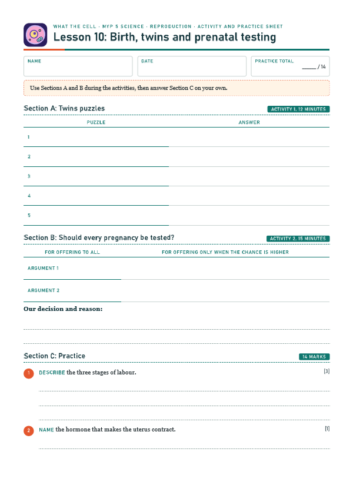

By the end of the lesson you can
- Describe the three trimesters and the stages of labour
- Explain how hormones control birth
- Distinguish between identical and non-identical twins
- Discuss the benefits and risks of prenatal tests
Keys: arrows or a presentation clicker move the slides, F for full screen. Slides with a red dot have a video or simulation.
Print and practise

Activity and practice sheet
Used in the lesson’s activities, with practice questions. Your teacher has the answers.
Download (PDF)Lesson 10 slides
All 20 slides in one file, to read again or print. The video buttons on the slides open YouTube.
Download the slides (PDF)Revising? The Revision tab on the unit page has the unit notes and review.
Notes: Birth, twins and prenatal testing
gestation
The time a baby develops in the uterus: about 40 weeks in humans.
trimester
One of the three periods of about 3 months that pregnancy is divided into.
labour
The process of birth: contractions, delivery of the baby, then the afterbirth. For example: often lasts several hours.
oxytocin
A hormone from the pituitary gland that makes the uterus muscle contract. For example: also releases breast milk.
positive feedback
A change causes more of the same change: contractions cause more oxytocin, until the baby is born.
identical twins
One zygote splits into two embryos: same DNA, same sex.
non-identical twins
Two eggs fertilised by two sperm: as alike as any brother and sister.
prenatal test
A check on the health of a baby before it is born.
premature
Born before 37 weeks of pregnancy. For example: babies born after about 24 weeks can survive with intensive care.
Key words
| gestation | the time a baby develops in the uterus: about 40 weeks in humans |
|---|---|
| trimester | one of three periods of about 3 months |
| labour | the process of birth: contractions, delivery, afterbirth |
| oxytocin | hormone that makes the uterus contract |
| positive feedback | a change that causes more of the same change |
| identical twins | from one zygote that splits; same DNA |
| amniocentesis | testing the baby's cells in a sample of amniotic fluid |
| premature | born before 37 weeks |